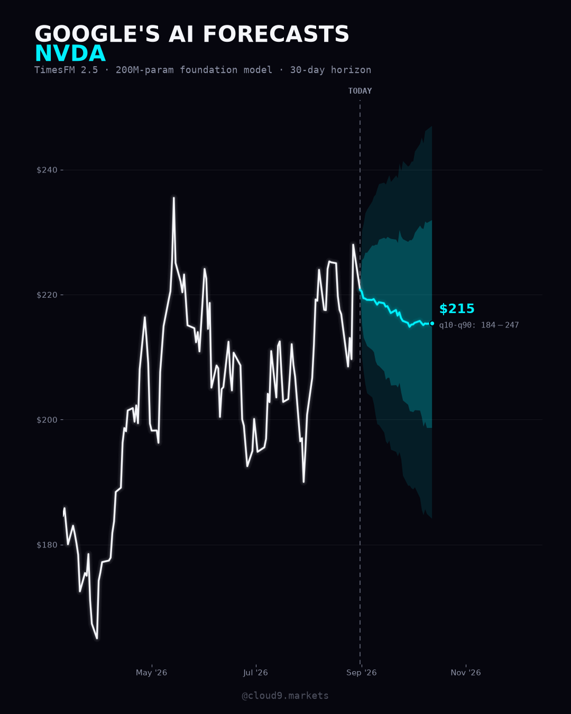

Google just released an AI
that forecasts any chart.
On August 31, Google Research dropped TimesFM 3.0 — a foundation model that does for time series what GPT did for text. Feed it any sequence of numbers — a stock price, sales data, crypto, your own metrics — and it forecasts what comes next, zero-shot, no training. This page: what it is, what its predecessor said about NVDA, and the exact code to run 3.0 yourself in 5 minutes, free.
By Cloud9 Research
The release, in numbers.
I ran the TimesFM family on NVDA.
Below is a 30-day NVDA forecast from TimesFM 2.5 — the previous generation, whose weights are fully open (Apache-2.0). White is the actual price; the band is the model's own 10th–90th percentile uncertainty.

Why I'm showing 2.5 and not 3.0: the new 3.0 weights ship under a non-commercial license, so I don't publish 3.0's outputs on this site. That restriction is on me, not on you — your own private experiments are exactly what the license allows, and the code below runs the real 3.0.
TimesFM 3.0 on any stock, in Colab.
Go to colab.research.google.com → New notebook. Free tier is plenty — no GPU needed.
First run downloads the model (~1.2 GB) from Google's official Hugging Face repo, then forecasts in seconds. Change TICKER to anything yfinance knows.
The median line is the model's central guess — the band is the honest part. A wide band means the model itself is telling you the future is uncertain. No forecasting model, Google's included, predicts the market reliably — that's precisely why the uncertainty bands are the feature to respect.
Draw the forecast on your chart.
This is my favourite part. The script below draws the TimesFM forecast into the future of a live TradingView chart — the gold cone is the q10–q90 band, the dashed gold line is the model's 30-day price target (its median endpoint), with the % move on the label. Open Pine Editor (bottom panel of TradingView) → paste → Add to chart. That's it.
//@version=6 indicator("TimesFM 2.5 · 30-day forecast cone", overlay = true) // ---- forecast data (generated 2026-09-01 · TimesFM 2.5 · Apache-2.0) ---- var int[] f_t = array.from(1788134400000, 1788220800000, 1788307200000, 1788393600000, 1788480000000, 1788739200000, 1788825600000, 1788912000000, 1788998400000, 1789084800000, 1789344000000, 1789430400000, 1789516800000, 1789603200000, 1789689600000, 1789948800000, 1790035200000, 1790121600000, 1790208000000, 1790294400000, 1790553600000, 1790640000000, 1790726400000, 1790812800000, 1790899200000, 1791158400000, 1791244800000, 1791331200000, 1791417600000, 1791504000000, 1791763200000) var float[] f_q50 = array.from(220.77999877929688, 220.48, 219.43, 219.35, 219.16, 219.13, 219.26, 218.82, 218.38, 218.77, 218.61, 218.07, 218.14, 217.61, 217.04, 217.52, 216.63, 217.15, 216.25, 215.79, 215.46, 214.84, 215.19, 215.22, 215.48, 215.77, 215.43, 215.11, 215.37, 215.32, 215.38) var float[] f_q10 = array.from(220.77999877929688, 210.07, 207.62, 205.63, 204.24, 203.59, 202.48, 200.69, 199.28, 199.16, 197.96, 196.54, 196.14, 196.68, 195.21, 194.86, 194.16, 194.82, 193.64, 191.06, 189.45, 189.46, 189.04, 188.86, 189.2, 187.48, 185.65, 184.73, 185.68, 184.94, 184.17) var float[] f_q90 = array.from(220.77999877929688, 230.16, 231.37, 233.04, 233.63, 234.92, 235.72, 236.02, 236.97, 237.72, 237.95, 237.65, 238.42, 239.13, 238.06, 239.1, 238.65, 241.03, 239.77, 241.4, 240.52, 240.75, 241.29, 241.36, 242.91, 244.16, 245.15, 244.2, 246.18, 246.4, 247.03) color GOLD = color.new(#d9b45b, 0) color BAND = color.new(#d9b45b, 82) color EDGE = color.new(#d9b45b, 55) if barstate.islast // band: one translucent box per forecast day for i = 0 to array.size(f_t) - 2 box.new(array.get(f_t, i), math.max(array.get(f_q90, i), array.get(f_q90, i + 1)), array.get(f_t, i + 1), math.min(array.get(f_q10, i), array.get(f_q10, i + 1)), xloc = xloc.bar_time, bgcolor = BAND, border_color = color.new(color.white, 100)) // polylines: median + band edges med = array.new<chart.point>() lo = array.new<chart.point>() hi = array.new<chart.point>() for i = 0 to array.size(f_t) - 1 array.push(med, chart.point.from_time(array.get(f_t, i), array.get(f_q50, i))) array.push(lo, chart.point.from_time(array.get(f_t, i), array.get(f_q10, i))) array.push(hi, chart.point.from_time(array.get(f_t, i), array.get(f_q90, i))) polyline.new(med, xloc = xloc.bar_time, line_color = GOLD, line_width = 3) polyline.new(lo, xloc = xloc.bar_time, line_color = EDGE, line_width = 1, line_style = line.style_dashed) polyline.new(hi, xloc = xloc.bar_time, line_color = EDGE, line_width = 1, line_style = line.style_dashed) // price target: dashed line at the 30-day median endpoint n = array.size(f_t) - 1 float tgt = array.get(f_q50, n) float chg = (tgt / array.get(f_q50, 0) - 1) * 100 line.new(array.get(f_t, 0), tgt, array.get(f_t, n), tgt, xloc = xloc.bar_time, color = GOLD, style = line.style_dashed, width = 2) label.new(array.get(f_t, n), tgt, text = "🎯 AI 30-day target $" + str.tostring(tgt, "#.##") + " (" + (chg >= 0 ? "+" : "") + str.tostring(chg, "#.#") + "%)" + "\nq10–q90 band $" + str.tostring(array.get(f_q10, n), "#") + "–$" + str.tostring(array.get(f_q90, n), "#"), xloc = xloc.bar_time, style = label.style_label_left, color = color.new(#0b0c10, 20), textcolor = GOLD, size = size.normal)Make it yours: the four array.from(...) rows are my Sep 1 NVDA run (TimesFM 2.5). To regenerate them for any ticker, add this to the end of your Colab cell and paste what it prints over those four rows:
j = lambda v: ", ".join(f"{x:.2f}" for x in v) print("var int[] f_t = array.from(" + ", ".join(str(int(d.timestamp()*1000)) for d in dates) + ")") print("var float[] f_q50 = array.from(" + f"{close.iloc[-1]:.2f}, " + j(median) + ")") print("var float[] f_q10 = array.from(" + f"{close.iloc[-1]:.2f}, " + j(q10) + ")") print("var float[] f_q90 = array.from(" + f"{close.iloc[-1]:.2f}, " + j(q90) + ")")Power move: if you use Claude, you can skip the copy-paste entirely — connect Claude to TradingView with an MCP server and it writes the Pine and pushes it onto your chart itself. I wrote a full free setup guide: Claude Code × TradingView Desktop. (Tip from my own setup: keep the Pine editor docked at the bottom, not the right, or the editor tools misbehave.)
What the 3.0 license lets you do.
You can: run it privately, experiment on any data, benchmark it, learn from it, and share what you found non-commercially. Personal research is exactly the intended use.
You can't: use the model or its forecasts for anything commercial or production — trading products, paid services, client work, business decisions — or redistribute the weights.
Need it for something commercial? Use TimesFM 2.5 (fully open, Apache-2.0 — the model in my chart above), or get a commercial license from Google.
You now run the same class of model the pros do.
Follow for the next free institutional-grade tool, decoded the day it drops.
Follow @cloud9.markets →